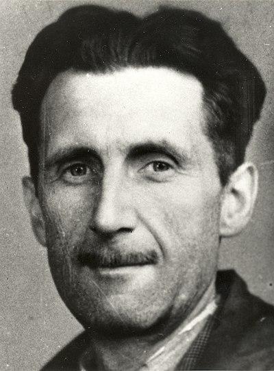

Джордж Оруел
Англійський письменник. Справжнє ім'я — Ерік Артур Блер (англ. Eric Arthur Blair). Писав журналістські нариси й політичні та літературні есе. Всесвітньо відомим став завдяки двом творам, написаними в останні роки життя: політичній алегорії «Колгосп тварин» і роману-антиутопії «1984», у яких він зобразив тоталітарне суспільство. Ввів у політичну мову термін «холодна війна».
Про книгу письменника...